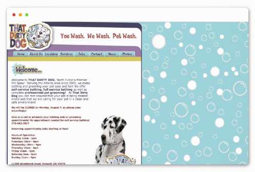
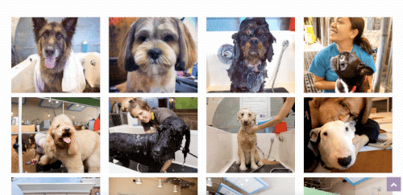

Established in 2005, That Dirty Dog is a dog groomer in Roswell, GA. They offer self-service bathing, full service bathing, and professional grooming. I was asked to update and re-design their website. Their old website was outdated and not mobile friendly. For this project, I used the Bootstrap framework, HTML, Sass, and jQuery. Their new website launched in September 2017.
Goals
- Keep the branding while updating the website
- Clean and responsive design
- Include an appointment request form
- Incorporate SinglePlatform for services
Wireframes and Mockups
I created the wireframes and mockups in Sketch for mobile and desktop. The owner of That Dirty Dog showed me a few of the websites that she liked which featured clean and minimalist design. I wanted to keep their branding and colors while modernizing and refreshing their website. I used all of their previous content on the old website but I updated the pictures. The call to action is for the user to request an appointment using the online form. I included the call to action at the top and bottom of the homepage and on the contact page. I sent the wireframes and mockups to the owner for approval.
Icon Design
I created the icons on the homepage in Adobe Illustrator and saved them as SVGs.
Photography
I went to the dog grooming facility to take professional photos for the website.
Development
I used the Bootstrap framework to make the website responsive with a mobile-first approach. I wrote all the styling with SCSS. For the services page, I used an iframe provided by SinglePlatform so the owner can update the services as needed. For the gallery, I wrote the jQuery for a responsive lightbox and a button to show more images. I also created the employment application and appointment request forms with validation (credit Bootstrapious). I used Git to save my progress as I developed the website.
Conclusion
That Dirty Dog now has a fresh and updated website that people may view on mobile, tablet, or desktop. While still retaining previously established branding, the new website reflects their commitment to quality, cleanliness, and love for pets.